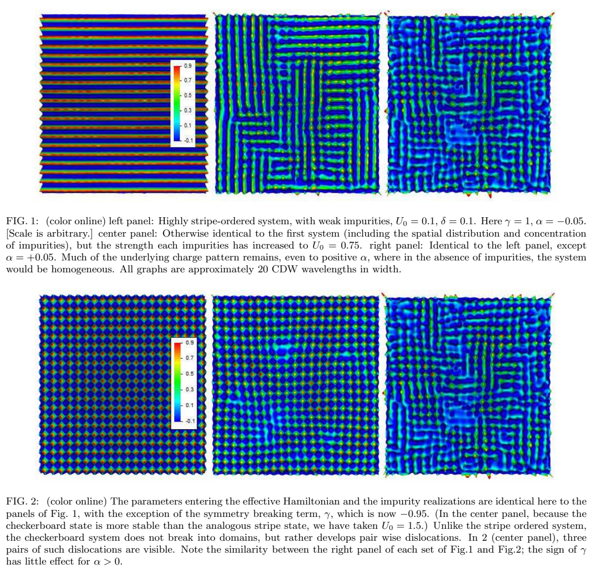

Theory & data analysis · Source 2
Distinguishing Patterns of Charge Order - Stripes or Checkerboards
Four Fourier peaks or a checkerboard-looking image do not uniquely identify the clean-limit order when disorder pins short-range charge correlations.

Compare the two right-hand panels first, then inspect the clean-preference coefficients in the captions. The images look similar despite opposite γ.
These are minimizations of an effective model; no new experimental STM data are shown in these panels.
Open full source page ↗ · Click the figure to enlargeDetailed argument · from assumptions to conclusions
1 · Define a stripe by symmetry, not appearance
A stripe is a unidirectional density modulation at one wavevector and its harmonics. A square-symmetric checkerboard contains two perpendicular modulations in the same region. Both break translation symmetry; the simple stripe additionally chooses an axis. The scalar density can represent an integrated local density of states, not exclusively the total electric charge density. A tunnelling image therefore needs a justified connection to the relevant electronic order.
Commensurate order is locked to a rational lattice period. Incommensurate order is not. Bond-centered and site-centered labels distinguish reflection symmetries for commensurate patterns; they are not generally distinct phases for an incommensurate wave. A global image can average stripe domains of both orientations and display four peaks, just as a bidirectional pattern can. Counting the peaks loses the information about whether both components coexist locally.
PDF pp. 1–2 ↗2 · Read the two-order-parameter free energy
The complex fields φx and φy encode the amplitude and phase of modulations along the two axes. Their rapid spatial oscillations are factored out; gradients of the fields describe slow changes, domains and phase distortions. The quadratic coefficient α controls the clean mean-field tendency to order. For α < 0, positive γ penalizes simultaneous x and y amplitudes and favors stripes; negative γ favors both amplitudes and hence checkerboards. This model assumes square symmetry, weak gradients and negligible commensurability effects.
Disorder enters as a fixed potential coupled to the density. It pins both translational phase and, indirectly, orientational patterns. The simulated images are obtained by minimizing this Landau–Ginzburg functional for specified impurity configurations. They are model-generated examples, not experimental STM photographs. Quenched disorder means that its configuration is held fixed during the electronic equilibration.
PDF pp. 2–3 ↗3 · Why a symmetric state can look ordered
For positive α the clean state is symmetric, but its susceptibility can be large near an instability. A weak defect then induces a local modulation. To leading order that response depends on the quadratic susceptibility, not on γ, the coefficient that chooses stripes or checkerboards after ordering. Consequently the two clean preferences can yield remarkably similar pinned images. The right panels of Figures 1 and 2 are the key controlled comparison.
When correlation length is only one or two modulation periods, the paper finds no robust way to infer the clean-limit pattern from appearance alone. Long, weakly disordered domains are more diagnostic. This is an inverse problem: many underlying states can map to similar measurements. A good analysis must report where its inference becomes ambiguous, rather than giving every attractive real-space image a definitive symmetry label.
PDF pp. 3–4 ↗4 · What the filters measure and when they work
The authors apply local filters around the two ordering wavevectors to obtain slowly varying amplitudes Ax and Ay. The CDW measure tracks translational coherence; the orientational measure tracks differences in the squared amplitudes. ηorient is invariant under an overall rescaling of intensity, which helps when unknown tunnelling matrix elements prevent absolute calibration. A pure single-axis pattern approaches one; an equal-amplitude checkerboard approaches zero in the clean ordered limit.
The threshold near ηorient = 0.2 in their figures is a result of the specified simulations and disorder averaging, not a universal experimental classifier. Positive-α pinned patterns can sit near that value regardless of γ. Likewise an orientational correlation length longer than a CDW correlation length can be suggestive without proving an orientational glass. The teaching widget below calculates a local amplitude imbalance for a simple pattern; it does not reproduce their filters or minimization algorithm.
PDF pp. 3–6 ↗5 · Why crystal structure and complementary probes matter
An orthorhombic distortion acts differently on stripes and bidirectional order, and commensurate locking restricts wavevector shifts. In an LTT structure successive CuO₂ planes have opposite preferred axes even though the full three-dimensional crystal is classified as tetragonal. Plane-specific anisotropy can thus generate both global peak orientations without local checkerboard order. Mixed spin-wavevector combinations, peak splitting and response to distortion provide additional tests, subject to resolution and coupling assumptions.
The 214-family scattering evidence is the strongest part of their stripe interpretation. The short-range BSCCO STM example is more tentative: one image and a small translational coherence length cannot substitute for a statistical ensemble or an independently established clean ordered phase. The authors favor stripe tendencies overall while acknowledging ambiguous cases. Apply the symmetry reasoning to a new sample, but do not import the historical conclusion indiscriminately to every modern cuprate charge-order measurement.
PDF pp. 5–9 ↗Essential equations · symbols, meaning & units
The two complex amplitudes encode separate orientations. Here Q is the magnitude of the ordering wavevector, and x and y are coordinates. c.c. ensures a real scalar density; φ varies slowly relative to the modulation period.
PDF p. 2 ↗A normalized intensity-imbalance measure; its interpretation depends on regime, filtering and disorder, rather than only its numerical value.
PDF pp. 4–6 ↗Check your understanding
Why do four charge-order peaks not prove a checkerboard?
Two sets of unidirectional domains, or alternating layer orientations, can produce the same global peak count.
Why is the weak pinned response insensitive to stripe-versus-checkerboard preference?
At leading order it depends on the quadratic susceptibility; the preference enters through higher-order interaction terms.
Should η = 0.21 always be called stripe order?
No. The quoted threshold is model- and regime-dependent, especially unreliable for short-range pinned fluctuations.
Source coverage and version
All substantive text on PDF pp. 1–9 read; reference pages 9–11 inspected. Figures 1–6 and Eqs. 3.1–3.2/4.7 visually checked. Stored v2 dated 30 August 2006; the generated header says 2018.